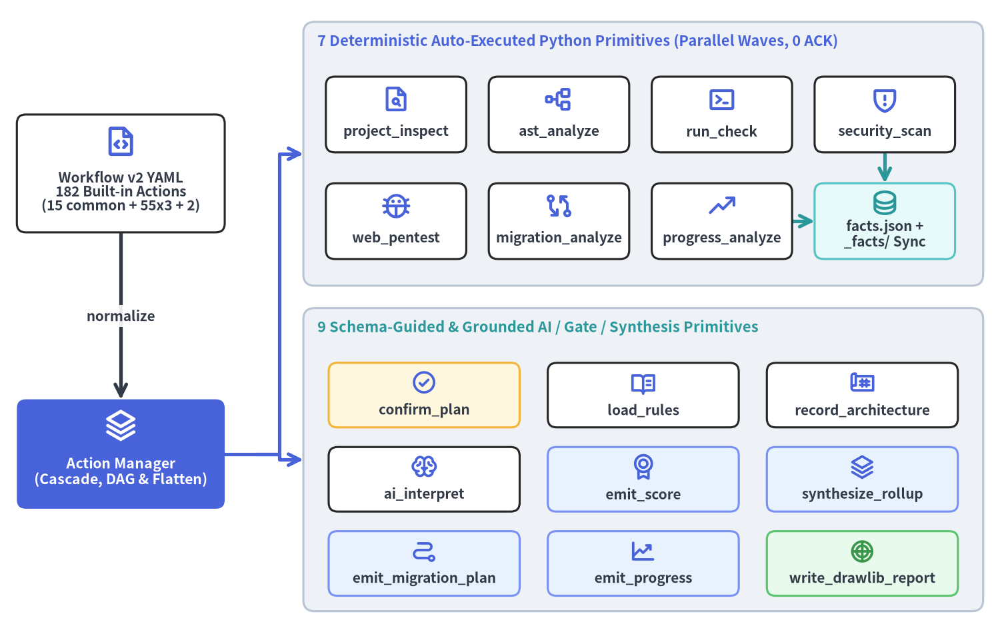
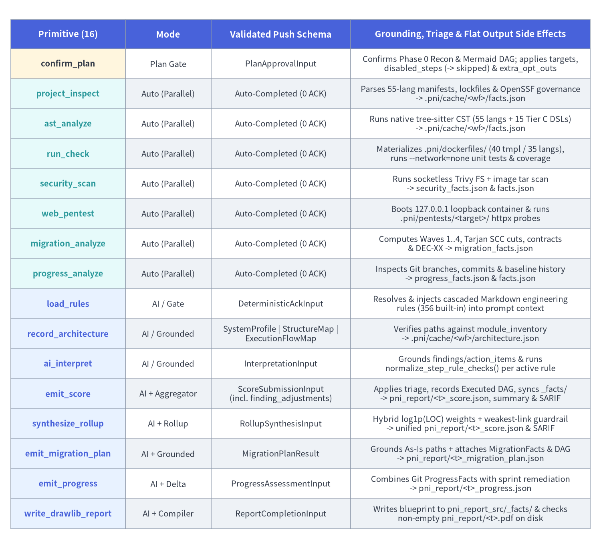

Actions & Primitives Pipeline: 182 Templates -> 16 Primitives
To eliminate LLM guesswork over code metrics, dependency versions, runtime test pass rates, CVE counts, multi-component weights, and refactoring blast radius, pni501 (v0.2.0) decouples declarative workflow authoring from execution mechanics. Across all 55 supported languages + generic, src/pni/_actions/ packages 182 built-in composite YAML action templates (15 universal common/ actions + 3 language-scoped actions for each of the 55 languages + 2 generic/ fallbacks) that flatten into 16 canonical PrimitiveType steps—combining 7 deterministic auto-executed Python analyzers (run automatically in parallel DAG waves with zero empty ACK turns) with 9 schema-enforced, repository-grounded AI, gate, synthesis, and report primitives.

Source Code
from drawlib.canvas import save, setup
from drawlib.diagrams.architecture import ArchitectureDiagram, Node, NodeGroup, PhosphorIcon
from drawlib.styles import Styles
setup(width=178, height=112, dpi=150)
diag = ArchitectureDiagram(
node_style=Styles.PrimaryBold,
node_text_style=Styles.DarkBold.patch(text_size=10.0),
edge_style=Styles.DarkBold,
edge_text_style=Styles.DarkBold.patch(text_size=10.0),
node_card_style=Styles.WhiteBordered.patch(shape_r=1.6),
)
wf_node = diag.add(
Node(
"Workflow v2 YAML\n182 Built-in Actions\n(15 common + 55x3 + 2)",
width=37.0,
height=21.0,
icon=PhosphorIcon.FILE_CODE,
icon_size=6.0,
),
xy=(21.5, 81.0),
)
mgr_node = diag.add(
Node(
"Action Manager\n(Cascade, DAG & Flatten)",
width=37.0,
height=19.5,
icon=PhosphorIcon.STACK,
icon_size=6.0,
style=Styles.WhiteBold,
text_style=Styles.WhiteBold.patch(text_size=10.2),
card_style=Styles.PrimaryFlat.patch(shape_r=1.6),
),
xy=(21.5, 31.0),
)
det_group = diag.add(
NodeGroup(
title="7 Deterministic Auto-Executed Python Primitives (Parallel Waves, 0 ACK)",
width=121.0,
height=47.0,
style=Styles.Neutral.patch(shape_r=2.0),
text_style=Styles.PrimaryBold.patch(text_size=10.5, halign="left", valign="top"),
),
xy=(54.0, 61.0),
)
d1 = det_group.add(Node("project_inspect", width=25.0, height=13.5, icon=PhosphorIcon.FILE_MAGNIFYING_GLASS, icon_size=5.0), xy=(16.5, 30.5))
d2 = det_group.add(Node("ast_analyze", width=25.0, height=13.5, icon=PhosphorIcon.TREE_STRUCTURE, icon_size=5.0), xy=(45.5, 30.5))
d3 = det_group.add(Node("run_check", width=25.0, height=13.5, icon=PhosphorIcon.TERMINAL_WINDOW, icon_size=5.0), xy=(74.5, 30.5))
d4 = det_group.add(Node("security_scan", width=25.0, height=13.5, icon=PhosphorIcon.SHIELD_WARNING, icon_size=5.0), xy=(103.5, 30.5))
d5 = det_group.add(Node("web_pentest", width=25.0, height=13.5, icon=PhosphorIcon.BUG, icon_size=5.0), xy=(16.5, 11.5))
d6 = det_group.add(Node("migration_analyze", width=25.0, height=13.5, icon=PhosphorIcon.GIT_DIFF, icon_size=5.0), xy=(45.5, 11.5))
d7 = det_group.add(Node("progress_analyze", width=25.0, height=13.5, icon=PhosphorIcon.TREND_UP, icon_size=5.0), xy=(74.5, 11.5))
facts_node = det_group.add(
Node(
"facts.json +\n_facts/ Sync",
width=25.0,
height=13.5,
icon=PhosphorIcon.DATABASE,
icon_size=5.0,
style=Styles.SecondaryBold,
card_style=Styles.SecondaryNeutral.patch(shape_r=1.6),
),
xy=(103.5, 11.5),
)
ai_group = diag.add(
NodeGroup(
title="9 Schema-Guided & Grounded AI / Gate / Synthesis Primitives",
width=121.0,
height=54.0,
style=Styles.Neutral.patch(shape_r=2.0),
text_style=Styles.SecondaryBold.patch(text_size=10.5, halign="left", valign="top"),
),
xy=(54.0, 3.0),
)
a1 = ai_group.add(
Node("confirm_plan", width=34.0, height=11.5, icon=PhosphorIcon.CHECK_CIRCLE, icon_size=4.6, card_style=Styles.WarningNeutral.patch(shape_r=1.5)),
xy=(21.5, 38.5),
)
a2 = ai_group.add(Node("load_rules", width=34.0, height=11.5, icon=PhosphorIcon.BOOK_OPEN_TEXT, icon_size=4.6), xy=(60.5, 38.5))
a3 = ai_group.add(Node("record_architecture", width=34.0, height=11.5, icon=PhosphorIcon.BLUEPRINT, icon_size=4.6), xy=(99.5, 38.5))
a4 = ai_group.add(Node("ai_interpret", width=34.0, height=11.5, icon=PhosphorIcon.BRAIN, icon_size=4.6), xy=(21.5, 23.5))
a5 = ai_group.add(
Node("emit_score", width=34.0, height=11.5, icon=PhosphorIcon.MEDAL, icon_size=4.6, style=Styles.PrimaryBold, card_style=Styles.PrimaryNeutral.patch(shape_r=1.5)),
xy=(60.5, 23.5),
)
a6 = ai_group.add(
Node("synthesize_rollup", width=34.0, height=11.5, icon=PhosphorIcon.STACK, icon_size=4.6, style=Styles.PrimaryBold, card_style=Styles.PrimaryNeutral.patch(shape_r=1.5)),
xy=(99.5, 23.5),
)
a7 = ai_group.add(
Node("emit_migration_plan", width=34.0, height=11.5, icon=PhosphorIcon.PATH, icon_size=4.6, style=Styles.PrimaryBold, card_style=Styles.PrimaryNeutral.patch(shape_r=1.5)),
xy=(21.5, 8.5),
)
a8 = ai_group.add(
Node("emit_progress", width=34.0, height=11.5, icon=PhosphorIcon.CHART_LINE_UP, icon_size=4.6, style=Styles.PrimaryBold, card_style=Styles.PrimaryNeutral.patch(shape_r=1.5)),
xy=(60.5, 8.5),
)
a9 = ai_group.add(
Node("write_drawlib_report", width=34.0, height=11.5, icon=PhosphorIcon.CHART_POLAR, icon_size=4.6, style=Styles.SuccessBold, card_style=Styles.SuccessNeutral.patch(shape_r=1.5)),
xy=(99.5, 8.5),
)
diag.connect(wf_node, mgr_node, label="normalize", routing="orthogonal")
mgr_node.fork([det_group, ai_group], at_x=45.5, style=Styles.PrimaryBold)
diag.connect(d4, facts_node, routing="orthogonal", style=Styles.SecondaryBold)
diag.connect(d7, facts_node, routing="orthogonal", style=Styles.SecondaryBold)
diag.draw(xy=(0.0, 0.0))
save()
1. Two-Tier Action Expansion (182 Built-in Templates -> 16 Primitives)
Workflow definitions in .pni/workflows/*.yaml (WorkflowDefinition) stay concise because src/pni/_actions/base_model.py separates reusable domain audit bundles from low-level execution steps:
- Tier 1 — Composite Actions (
CompositeActionDefinition,182built-in templates): Domain-focused YAML specifications invoked viauses: <action_id>. Every language pack among the 55 registered languages pairs 15 universalcommon/actions with 3 language-scoped<lang>/actions (repo_structure_audit,<lang>_ast_audit,<lang>_test_audit), plus 2generic/fallback actions—totaling15 + (55 × 3) + 2 = 182packaged YAML templates. - Tier 2 — Canonical Primitives (
PrimitiveStep&PrimitiveType,16primitives): The16execution primitives referenced inside composite YAMLs or directly in a workflow step viaaction: <primitive_type>. Every stateful Workflow v2 DAG run and ad-hocrun-actioncall operates over flattenedPrimitiveSteprows carryingneeds,when, andfact_views.
1.1 Catalog of the 18 Active Per-Language Composite Actions (15 Universal + 3 Language-Scoped)
For any of the 55 supported languages, workflows compose from these 18 active composite YAML actions (15 in common/ + 3 in <lang>/):
| # | Composite uses: ID |
Scope | Expanded PrimitiveType Sequence |
Default Attached Rules & Purpose |
|---|---|---|---|---|
01 |
repo_structure_audit |
<lang>/ |
project_inspect -> ai_interpret |
<lang>/dependencies, common/supply_chain, common/documentation, common/git_hygiene, common/security |
02 |
architecture_analysis |
common/ |
record_architecture (×3: purpose_and_stack, layers_and_modules, flows_and_state) |
common/architecture — Grounded 3-aspect system comprehension saved to architecture.json |
03 |
<lang>_ast_audit |
<lang>/ |
ast_analyze -> ai_interpret |
<lang>/code_quality, <lang>/typing, <lang>/modernization, and detected framework rules (via native tree-sitter) |
04 |
<lang>_test_audit |
<lang>/ |
ai_interpret (consumes AstFacts) |
<lang>/testing — Evaluates test isolation, mirror layout, and assertion density |
05 |
supply_chain_audit |
common/ |
ai_interpret (consumes ProjectFacts) |
common/supply_chain, common/git_hygiene, common/security — OpenSSF & CI/CD governance |
06 |
library_hygiene_audit |
common/ |
ai_interpret |
common/library_hygiene, common/documentation — SemVer API surface & minimal dependencies |
07 |
cli_guidelines_audit |
common/ |
ai_interpret |
common/cli_guidelines, common/error_handling — Clig.dev ergonomics, --help, exit codes |
08 |
service_readiness_audit |
common/ |
ai_interpret |
common/twelve_factor, common/production_readiness, common/observability, common/resilience |
09 |
container_runtime_audit |
common/ |
run_check -> ai_interpret |
common/container_hygiene, common/production_readiness — Offline --network=none tests & smoke probe |
10 |
security_vulnerability_audit |
common/ |
security_scan -> ai_interpret |
common/security, common/supply_chain, common/container_hygiene — Socketless Trivy FS + image tar scan |
11 |
web_penetration_audit |
common/ |
web_pentest -> ai_interpret |
common/security, common/resilience — Loopback container boot + live httpx security probes |
12 |
emit_score |
common/ |
emit_score |
Applies finding_adjustments triage, records Executed DAG, syncs pni_report_src/_facts/, emits score + summary + SARIF |
13 |
synthesize_rollup |
common/ |
synthesize_rollup |
Collects includes component scores, computes hybrid weighted rollup + weakest-link guardrail, emits unified score + SARIF |
14 |
write_drawlib_report |
common/ |
write_drawlib_report (report_kind: audit | rollup) |
common/reporting — Emits blueprint into pni_report_src/_facts/ and verifies compiled pni_report/<target>.pdf |
15 |
migration_proposal |
common/ |
migration_analyze -> ai_interpret -> emit_migration_plan |
common/migration_planning, common/architecture — Waves 1..4, Tarjan SCC cuts & pni_report/<target>_migration_plan.json |
16 |
write_migration_report |
common/ |
write_drawlib_report (report_kind: migration) |
common/reporting, common/migration_planning — Compiles 7-chapter Migration A4 PDF into pni_report/ |
17 |
progress_assessment |
common/ |
progress_analyze -> ai_interpret -> emit_progress |
common/progress_tracking — Measures multi-sprint remediation delta & Git branch hygiene into pni_report/<target>_progress.json |
18 |
write_progress_report |
common/ |
write_drawlib_report (report_kind: progress) |
common/reporting, common/progress_tracking — Compiles remediation progress A4 PDF into pni_report/ |
1.2 Three-Layer Cascade, DAG Wiring & Parameter Merging (_actions/manager.py)
When normalize_workflow_steps() expands a Workflow v2 YAML, expand_composite_action() resolves uses: via local (.pni/actions/) > <active_lang>/ > common/ (or generic/) and merges four configuration layers:
- DAG Dependencies & Guards (
needs,when,fact_views): Step-levelneeds:andwhen:attach to the composite's entry primitive, while intra-composite primitives chain automatically (act-02depends onact-01) and carry default or overriddenfact_viewsfor compact prompt projection. - Parameters (
params): Canonical flat report defaults (src_dir: "pni_report_src",output_dir: "pni_report"),.pni/pni.toml [report]settings, workflow target context, and stepwith:parameters merge over primitive defaults ({**prim.with_params, **override_params}). - Rules (
rules): Composite rules, workflow-steprules:additions, and primitive-level rules are concatenated and deduplicated in declaration order (dict.fromkeys). - Provenance IDs: Compound step IDs (
{step_id}__{idx}_{prim.type.value}) preservestep_keyandsource_action=comp.idalongside SQLite's sequentialact-01..NNIDs soprovenance.pycan reconstruct the clean stage-level Executed Audit DAG.
2. Complete Catalog of the 16 Canonical Primitives
In src/pni/_actions/ai_actions.py and src/pni/_workflows/engine.py, every AI/gate prompt injects a compact schema skeleton (get_expected_input_schema_json(..., compact=True), or full JSON Schema via --full-schema), and every push-action call enforces Pydantic v2 validation and repository path grounding (_verify_grounded_paths()):

Source Code
from drawlib.canvas import save, setup
from drawlib.smartarts import Table
from drawlib.styles import Styles
setup(width=168, height=154, dpi=150)
headers_and_rows = [
["Primitive (16)", "Mode", "Validated Push Schema", "Grounding, Triage & Flat Output Side Effects"],
[
"confirm_plan",
"Plan Gate",
"PlanApprovalInput",
"Confirms Phase 0 Recon & Mermaid DAG; applies targets,\ndisabled_steps (-> skipped) & extra_opt_outs",
],
[
"project_inspect",
"Auto (Parallel)",
"Auto-Completed (0 ACK)",
"Parses 55-lang manifests, lockfiles & OpenSSF governance\n-> .pni/cache/<wf>/facts.json",
],
[
"ast_analyze",
"Auto (Parallel)",
"Auto-Completed (0 ACK)",
"Runs native tree-sitter CST (55 langs + 15 Tier C DSLs)\n-> .pni/cache/<wf>/facts.json",
],
[
"run_check",
"Auto (Parallel)",
"Auto-Completed (0 ACK)",
"Materializes .pni/dockerfiles/ (40 tmpl / 35 langs),\nruns --network=none unit tests & coverage",
],
[
"security_scan",
"Auto (Parallel)",
"Auto-Completed (0 ACK)",
"Runs socketless Trivy FS + image tar scan\n-> security_facts.json & facts.json",
],
[
"web_pentest",
"Auto (Parallel)",
"Auto-Completed (0 ACK)",
"Boots 127.0.0.1 loopback container & runs\n.pni/pentests/<target>/ httpx probes",
],
[
"migration_analyze",
"Auto (Parallel)",
"Auto-Completed (0 ACK)",
"Computes Waves 1..4, Tarjan SCC cuts, contracts\n& DEC-XX -> migration_facts.json",
],
[
"progress_analyze",
"Auto (Parallel)",
"Auto-Completed (0 ACK)",
"Inspects Git branches, commits & baseline history\n-> progress_facts.json & facts.json",
],
[
"load_rules",
"AI / Gate",
"DeterministicAckInput",
"Resolves & injects cascaded Markdown engineering\nrules (356 built-in) into prompt context",
],
[
"record_architecture",
"AI / Grounded",
"SystemProfile | StructureMap |\nExecutionFlowMap",
"Verifies paths against module_inventory\n-> .pni/cache/<wf>/architecture.json",
],
[
"ai_interpret",
"AI / Grounded",
"InterpretationInput",
"Grounds findings/action_items & runs\nnormalize_step_rule_checks() per active rule",
],
[
"emit_score",
"AI + Aggregator",
"ScoreSubmissionInput\n(incl. finding_adjustments)",
"Applies triage, records Executed DAG, syncs _facts/\n-> pni_report/<t>_score.json, summary & SARIF",
],
[
"synthesize_rollup",
"AI + Rollup",
"RollupSynthesisInput",
"Hybrid log1p(LOC) weights + weakest-link guardrail\n-> unified pni_report/<t>_score.json & SARIF",
],
[
"emit_migration_plan",
"AI + Grounded",
"MigrationPlanResult",
"Grounds As-Is paths + attaches MigrationFacts & DAG\n-> pni_report/<t>_migration_plan.json",
],
[
"emit_progress",
"AI + Delta",
"ProgressAssessmentInput",
"Combines Git ProgressFacts with sprint remediation\n-> pni_report/<t>_progress.json",
],
[
"write_drawlib_report",
"AI + Compiler",
"ReportCompletionInput",
"Writes blueprint to pni_report_src/_facts/ & checks\nnon-empty pni_report/<t>.pdf on disk",
],
]
tbl = Table(
cell_style=Styles.White,
text_style=Styles.Dark.patch(text_size=9.8),
header_cell_style=Styles.PrimaryFlat,
header_text_style=Styles.WhiteBold.patch(text_size=10.5),
border_style=Styles.MutedThin,
has_header=True,
)
tbl.set_style_cell_evenodd(
even_color=Styles.Neutral.shape_fill_color,
even_text_style=Styles.Dark.patch(text_size=9.8),
odd_color=Styles.White.shape_fill_color,
odd_text_style=Styles.Dark.patch(text_size=9.8),
)
tbl.set_style_cell(
background_color=Styles.PrimaryFlat.shape_fill_color,
text_style=Styles.WhiteBold.patch(text_size=10.5),
rows=[0],
)
tbl.set_style_cell(
background_color=Styles.WarningNeutral.shape_fill_color,
text_style=Styles.DarkBold.patch(text_size=9.8),
rows=[1],
columns=[0],
)
tbl.set_style_cell(
background_color=Styles.SecondaryNeutral.shape_fill_color,
text_style=Styles.SecondaryBold.patch(text_size=9.8),
rows=[2, 3, 4, 5, 6, 7, 8],
columns=[0],
)
tbl.set_style_cell(
background_color=Styles.PrimaryNeutral.shape_fill_color,
text_style=Styles.PrimaryBold.patch(text_size=9.8),
rows=[9, 10, 11, 12, 13, 14, 15, 16],
columns=[0],
)
col_widths = [32.0, 24.0, 39.0, 67.0]
row_heights = [8.2] + [8.4] * 16
tbl.draw_flexible(
xy=(3.0, 148.5),
column_widths=col_widths,
row_heights=row_heights,
data=headers_and_rows,
align="top_left",
)
save()
2.1 Zero-ACK Parallel Deterministic Auto-Execution (7 Analyzers)
Whenever pni workflows get-action / get-actions (or start --pull / push-action --next) reaches any of the 7 deterministic primitives (project_inspect, ast_analyze, run_check, security_scan, web_pentest, migration_analyze, progress_analyze), _advance_deterministic_actions() runs all currently DAG-ready analyzers in parallel via ThreadPoolExecutor:
- Zero Empty ACK Turns: Deterministic steps auto-complete immediately after persisting
action_runs.deterministic_output_jsonand updating.pni/cache/<workflow_id>/facts.json(plus running the 15 Tier C companion DSL scanners once onreposcope), advancing straight to the next ready AI/gate prompt. - Zero Re-Execution on Retry: Re-pulling an AI prompt reads cached facts straight from SQLite unless the operator explicitly rewinds with
pni workflows rewind <run_id> <selector>.
2.2 Grounding Gates, False-Positive Triage & Flat Report Sync (9 AI/Gate Primitives)
- Plan Alignment Gate (
confirm_plan->PlanApprovalInput): Lets humans or CI (--auto-approve) confirm Phase 0 Recon targets, skip unnecessary stages (disabled_steps), recordfocus_areas, and attach run-scopedextra_opt_outs. - Aspect-Separated Architecture Comprehension (
record_architecture->architecture.json): Splits comprehension intoSystemProfile,StructureMap, andExecutionFlowMap, verifying every path againstAstFacts.module_inventoryand the workspace. - Per-Rule Compliance & Grounded Reasoning (
ai_interpret->InterpretationInput): Enforces groundedfindings[].file_pathandaction_items[].target_files, plus normalized per-rule verdicts (pass,warn,fail,not_applicable). - Score Stamping, Finding Triage & Executed DAG (
emit_score/synthesize_rollup): Accepts clean v2ScoreSubmissionInput(including auditedfinding_adjustmentswithaction: "waive" | "reclassify",new_severity, and mandatory justificationreason), computesExecutionDagSummary(provenance.py), synchronizes structured JSON evidence intopni_report_src/_facts/, and writespni_report/<target>_score.json,*_summary.json, and*_findings.sarif.json. - Migration, Progress & Blueprint-Guided Report Gates (
emit_migration_plan,emit_progress,write_drawlib_report): Ground all As-Is paths and Git delta evidence, emit blueprints directly intopni_report_src/_facts/, and verify every file listed inReportCompletionInput.generated_files(such aspni_report/<target>.pdf) exists on disk withst_size > 0.
Continue to Analyzers & Live Pentest for a deep dive into the native tree-sitter>=0.25.0 CST engine across 55 languages / 57 grammars and the isolated container sandboxes, or see 7-Axis Scoring Model for how emit_score computes anchored grades and triage adjustments.